Each one is a single page with real content from the spec and its own motion idea. Flip between them with the bar in the corner or the [ and ] keys. Mixing is fine: the type from one, the motion from another.
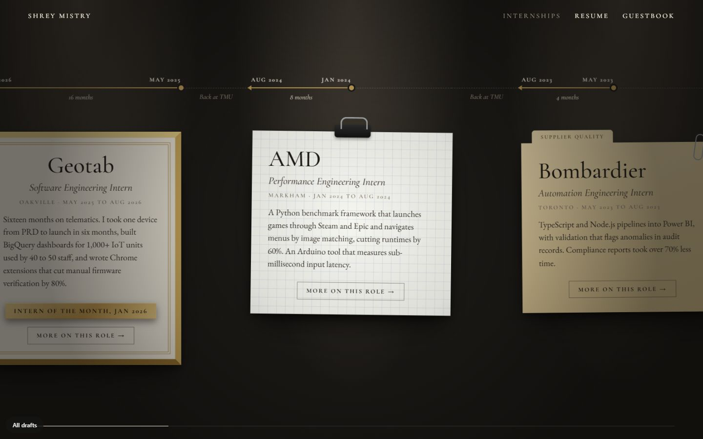
Latest. The lamp flickers on across the tops of the letters. Internships on a timeline, each with its own page. Education gets a room. Live project sites in the closer look. Guestbook ready to connect.
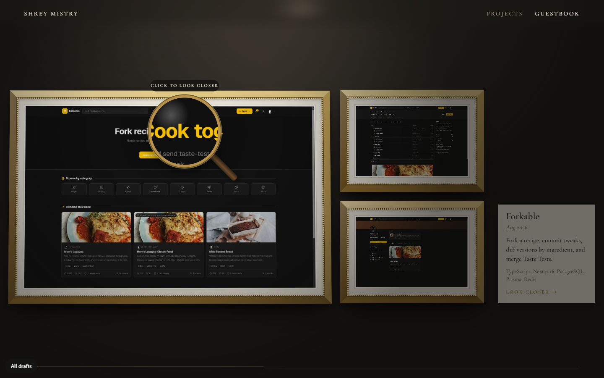
Cormorant Garamond and EB Garamond. Lights flicker on and you walk in. Gilt, walnut, ebony, and silver frames on one size system, a brass loupe for a cursor, and frames that slide away on a rail to show the story and a glimpse of the repo. Guestbook form instead of an email link.
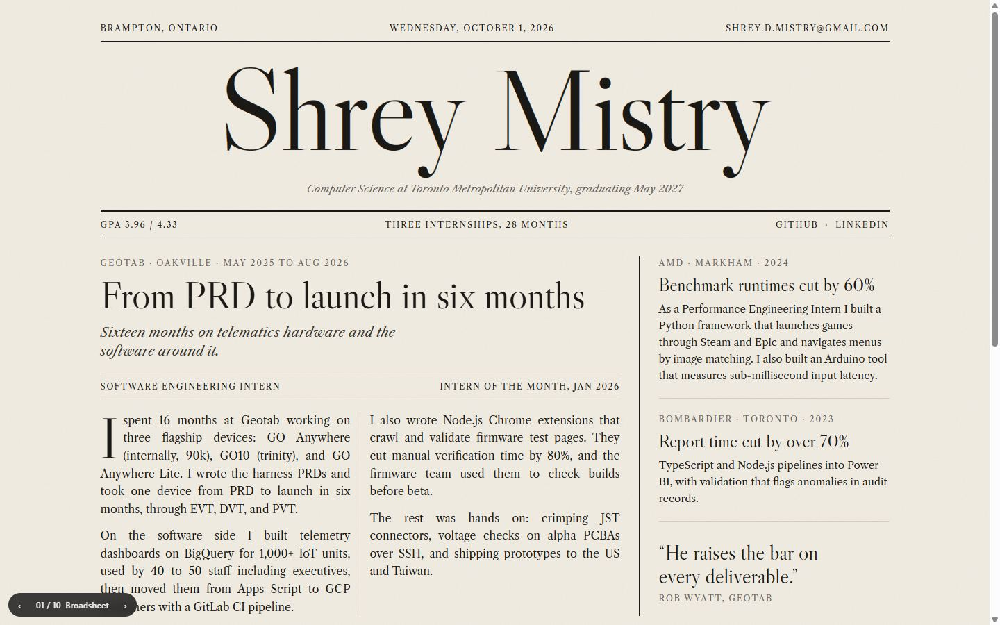
Libre Caslon. A newspaper front page. The masthead is set letter by letter, column rules draw in, and screenshots are halftone grey until colour spreads out from wherever your cursor enters.
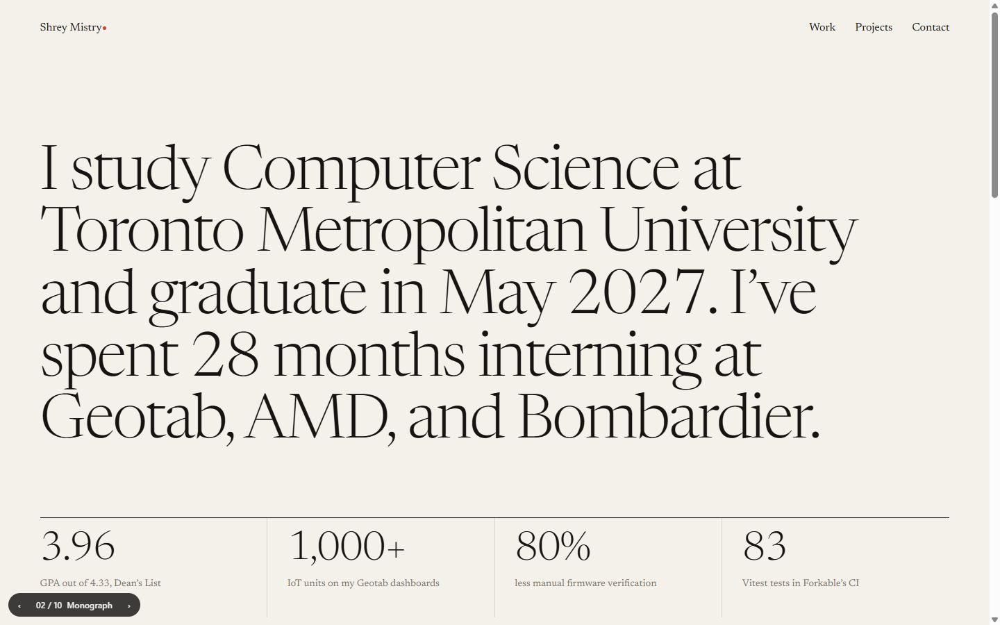
Newsreader. Big editorial type on a strict grid, one red dot. Lines rise from behind masks, stats roll like an odometer, and a screenshot trails the cursor on a spring through the project list.
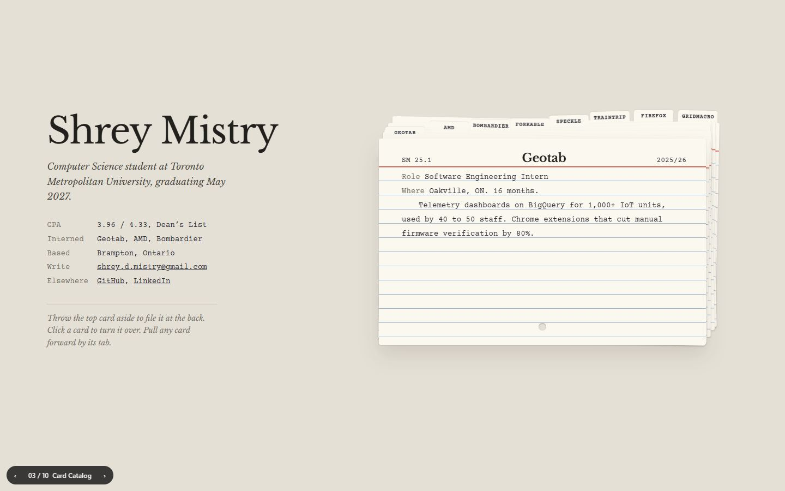
Libre Baskerville and Courier Prime. Library index cards. Throw the top card aside, click to turn it over for subject headings, or pull any card forward by its tab.
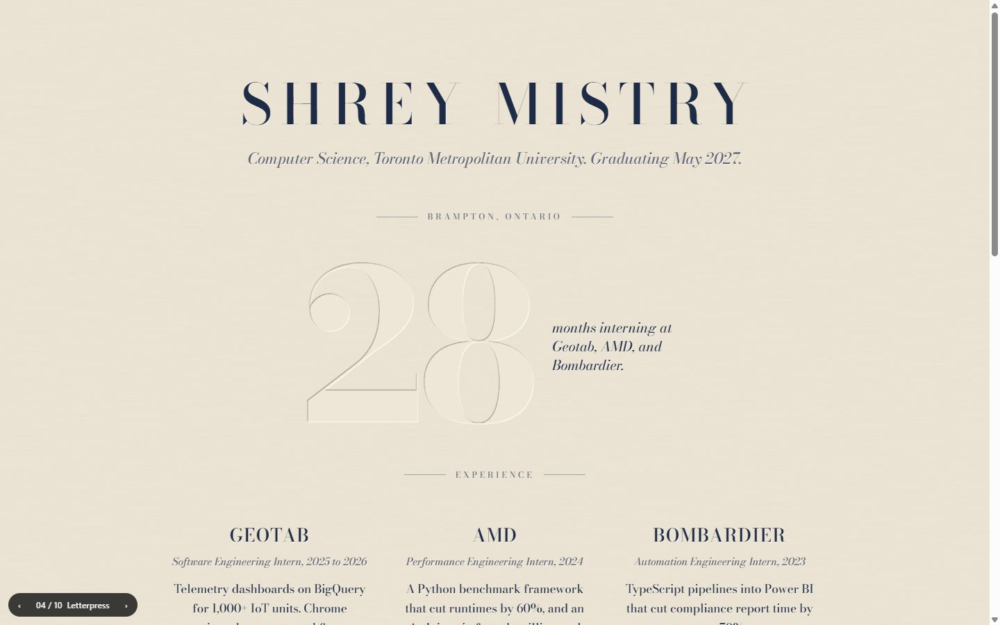
Bodoni Moda. Type pressed into cotton paper. Your cursor is the light source, so every impression shifts its shadow as you move. Buttons sink when pressed.
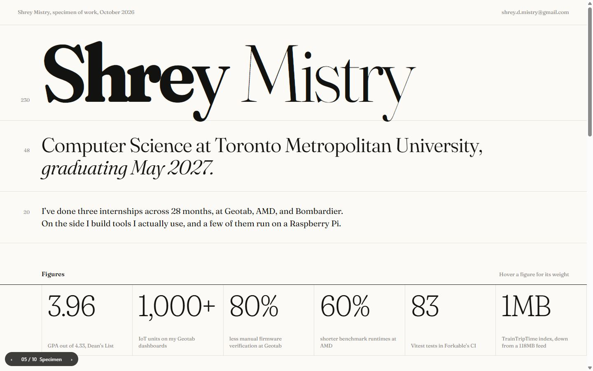
Fraunces, variable. A type specimen sheet with point sizes in the margin. Letters in the name get heavier as your cursor nears them, and project names take a wave of weight on hover.
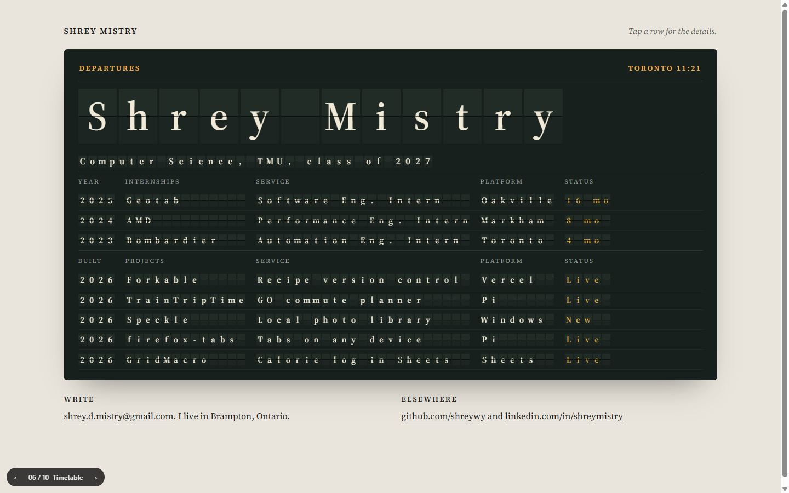
Source Serif. A split-flap departures board with a live Toronto clock. Every cell clatters into place. Click a row for the details.
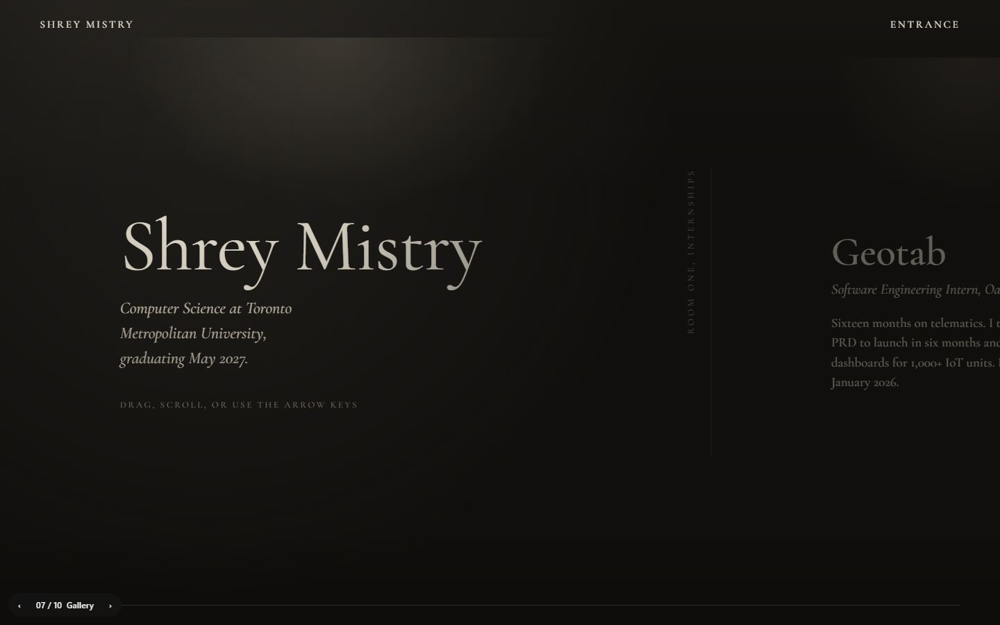
Cormorant Garamond. A dark exhibition you drag through sideways. Framed, matted screenshots with placards, a spotlight on the cursor, and frames that lean toward you.
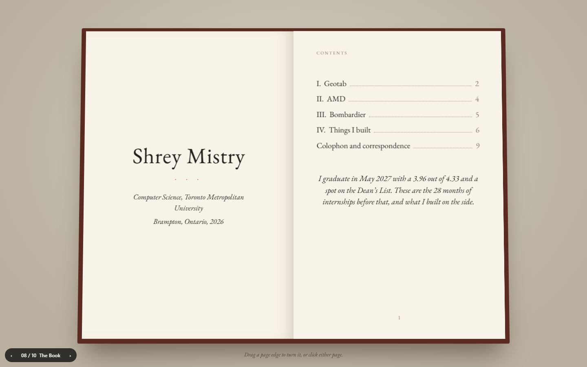
EB Garamond. A bound book with chapters, drop caps, and footnotes. Drag a page to turn it and it follows your hand. Corners lift when you reach for them.
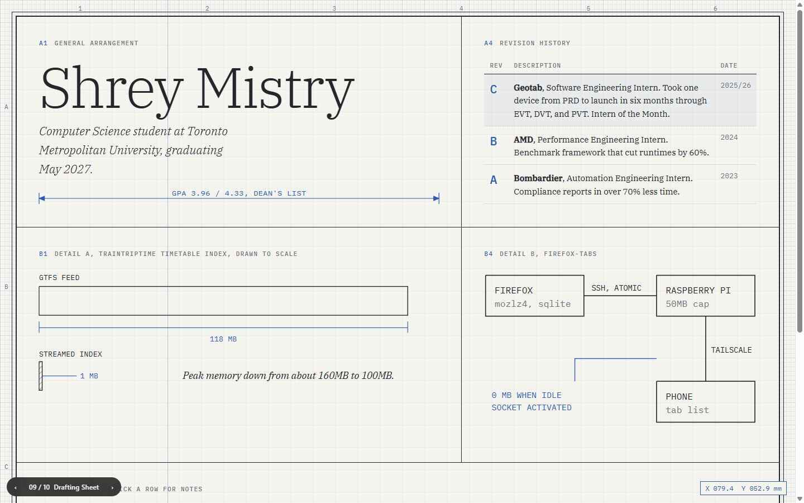
IBM Plex Serif. An engineering drawing. Internships are the revision history, projects are the parts list, and details are drawn to scale. Drag anywhere to measure.
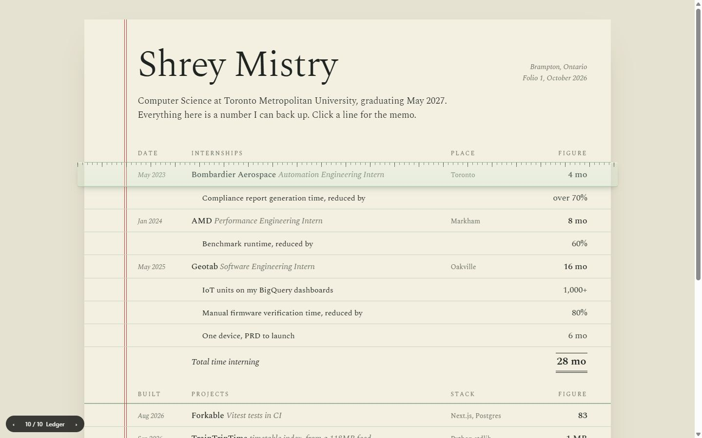
Spectral. Every claim as a line item. A clear reading ruler snaps from row to row, figures tally up, and the total gets its double rule.